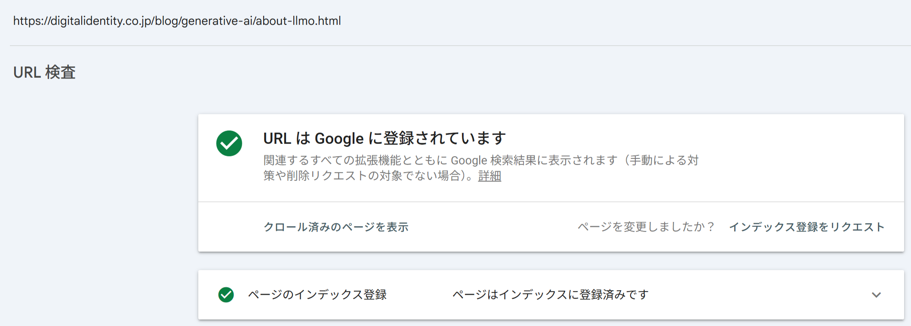
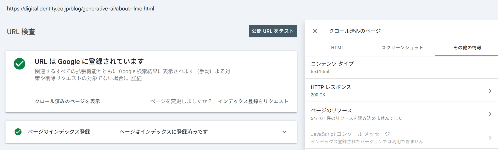

テクニカルSEO
基礎：HTML構造、1URL1コンテンツ、サイト構造：URL設計、内部リンク、クロール制御：robots.txt、サイトマップ、エラー・スパム対応、表示速度：ネットワーク／レンダリング／サーバー、Core Web Vitals、測定ツール、HTTPS
クロールの促進：URL検査・フィード・WebSub
クロールを「制限する」方法に対し、本セクションでは新規ページや更新ページをいち早くクローラに発見してもらうための方法を扱います。XMLサイトマップ（前セクション）に加えて、代表的な方法が3つあります。
| 方法 | 特徴 | クロールの性質 |
|---|---|---|
| URL検査ツール | Search Consoleから特定URLのクロールを個別にリクエストする | 能動的（手動で1件ずつ） |
| RSS/Atomフィード | 更新ページの一覧をXML形式で配信する | 受動的（クローラや購読者が定期的に取得） |
| WebSub（旧PubSubHubbub） | 更新をハブ経由でプッシュ通知する | 能動的（システムで自動化） |
URL検査ツールは、Search Console上部の検索ボックスにURLを入力し、[インデックス登録をリクエスト]をクリックすることでクロールを要求できる機能です。


- HTTPレスポンスの確認：HTTPステータスコードや、HTTPヘッダーによるcanonical設定などを確認できる
- レンダリングチェック：Googlebotが認識しているページのスクリーンショットを確認できる。表示内容が実際のユーザー向け表示と大きく異なる場合は、クローラへの偽装行為（クローキング）と誤認識されるリスクもある
RSS/Atomフィードは、更新ページのURL・更新日・タイトル・要約などを配信する仕組みです。全URLを網羅するXMLサイトマップとは役割が異なり、直近の更新情報を効率よく伝えることに向いています。RSSとAtomの2形式がありますが、Atomのほうが仕様が明瞭であるとされ、新規に作成する場合はAtom形式が選ばれる傾向にあります。フィードを用意したら、Search Consoleへの登録に加え、トップページのhead要素に<link rel="alternate">でフィードのURLを記述して存在を伝えます。
WebSub（旧称PubSubHubbub）
コンテンツの更新をハブ（Hub）経由でクローラやフィードリーダーにプッシュ通知する仕組み。出版者（サイト運営者）がハブに更新を伝え、ハブが購読者（Googlebotなど）へ通知することで、更新を都度手動リクエストせずに能動的なクロールを実現できます。エンジニアによるシステム実装が必要です。
これらの手法は、いずれも「Googleが自主的にクロールしてくれるのを待つのではなく、更新をこちらから積極的に伝える」という発想に基づきます。特にニュース記事など速報性が求められるコンテンツでは、フィードやWebSubの活用がクロール頻度の向上に有効とされています。ただし、URL検査ツールとWebSubは検索エンジンのクローラに対してのみ有効で、生成AIのクローラには基本的に効果がありません。